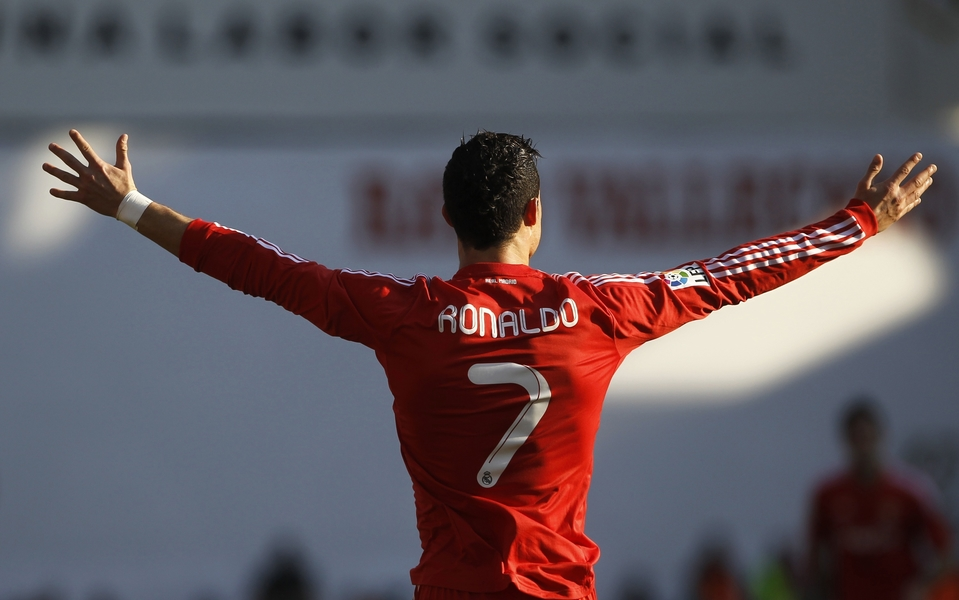
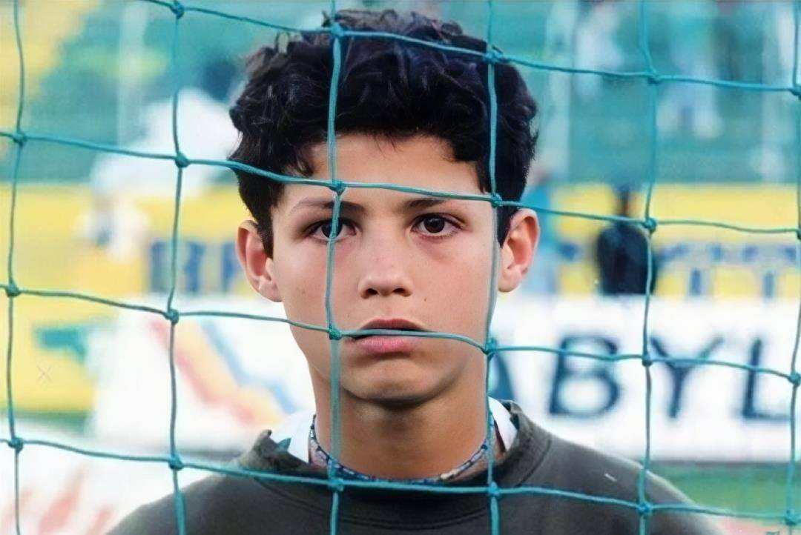
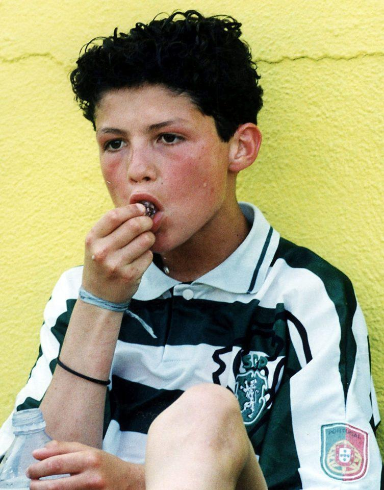

|  | |||||
| 首页 | 成长经历 | 职业生平 | 重要荣誉 | 精彩瞬间 | 精神与影响力 |
足坛最璀璨的巨星，绿茵场的刺客之王 ——克里斯蒂亚诺·罗纳尔多 |
|||||
1985年，C罗出生在葡萄牙马德拉群岛的沙丰尔，这里距离非洲只有600公里，是一个偏僻落后的小城镇。 父亲原是一名服装厂的工人，因酗酒被工厂辞退后，做起了工作自由的园丁，并且兼职做一些散工。 母亲原本是一名演员，但当时的演员并不怎么赚钱，所以转行当了厨师，还兼做一些清洁工的工作。因为父母的收入都不高，生活过得十分清贫。C罗是家中第四个孩子，因为担心养不起，父母想要将这个孩子打掉。 但当他们一起来到医院做手术时，却遭到了医生的强烈反对，医生对孩子父母说，孩子就是未来的希望，绝不能因为贫穷而放弃孩子的生命。 因为家中贫困，c罗和哥哥姐姐挤在一间屋子里睡觉，不免会发生争执，而每当c罗犯了一些小错误时，他也不承认，特别的倔强，但因为c罗最小，所以父母也总是维护他。父母的宠爱让小时候的c罗十分任性，也让他在成年后少了一些谦逊。 小学后，他的父亲恰好在一所足球学校兼职作设备管理员， 因为父亲的工作缘故，C罗得以进入了足球学校，这也成为了他人生的关键转折点。 据c罗那时候的小队友透露，c罗踢球确实很厉害，总是梦想着能够成为球星，但他也很脆弱，只要输了球就会哭，因为哭得特别厉害，大家还给他取了个“哭泣宝宝”的绰号。 但在哭完之后，c罗也经常反思自己的失误，让自己变得更加强大。 1995年，10岁的c罗被选入了当地一家足球俱乐部，在这里他依旧是佼佼者，表现的非常与众不同。 一年后，父亲带着他到葡萄牙著名的里斯本竞技俱乐部试训。 在为期三天的试训过程中，c罗因其出色的表现，被俱乐部选中，加入了球队的青训营，并且与他签了一份价值2.5万美元的合同。 作为葡萄牙乃至欧洲最为著名的青训营，这里汇聚了众多的天才小球员。 C罗作为一个来自偏僻小岛的孩子，初到这里时，过得并不如意，因其说话带着浓厚的乡音，经常受到同学的嘲笑。 而c罗在感觉到自己受到侮辱后，并不会忍气吞声，经常和其他孩子对着干，打架斗殴的事情屡屡发生。 这让c罗在青训营遭到了不少人的排挤，让他本就孤傲的性格变得越发高冷。 然而在他争强好胜的外表下，内心仍旧是脆弱的，常常一个人躲在角落里哭泣，倾泻自己的委屈，想念家乡的亲人和朋友。 那时候俱乐部为了保护未成年人，严格控制小球员的训练时间，训练结束后，就会把足球收起来，c罗接触不到足球，就会到餐厅拿橘子等水果练习颠球。 晚上，等别的孩子准备睡觉时，他还会偷偷跑到健身房加练，经常半夜还在健身房锻炼自己的力量。 教练得知后，不得不在晚上关闭了健身房，而c罗并没有放弃，他找到两个水桶，灌满水后做深蹲和俯卧撑，教练发现后，又把水桶拿走了，C罗又找来一些重物绑在腿上，训练自己的速度。 当别的球员都在抱怨训练太苦太累的时候，c罗却将训练当成了一种乐趣。少年时代的c罗有着旁人难以企及的毅力，自尊心特别的强，他不想任何人看不起他。 他总是对嘲笑他的人说：总有一天我会成为世界上最好的球员。 2002年，凭借天赋和努力，17岁的c罗终于获得了一线队亮相的机会，在葡萄牙超级联赛中首发登场，首秀就攻入了两球，成为了足坛一颗冉冉升起的新星。 2003年，在里斯本竞技与英超的豪门曼联队的友谊赛中，c罗在场上表现出色，年仅18岁的他在与当时世界上身价最高的后卫费迪南德的多次对抗中都处于上风。 半场结束后，费迪南德建议时任曼联队主教练的佛格森爵士签下c罗。 而佛格森也早已注意到了C罗，觉得他是个可造之材，于是没等下半场结束，就紧急通知了球队高层，希望他们尽快和里斯本竞技谈判。 接下来，曼联花了1224英镑把他带了回来，创造了青少年转会的记录，并且将队里曾经的第一球星贝克汉姆的7号队衣授予了他。 加入世界顶级豪门后，c罗如鱼得水，很快就坐稳了主力位置，逐渐成长了起来。 2007到2008赛季，c罗代表曼联出场48次，打入了42球，凭借出色的表现，获得了欧洲金靴奖和国际足联世界足球先生的荣誉。 这一刻，c罗迎来了职业生涯的第一次巅峰，终于实现了被孤立排挤时说过的话，向全世界证明了自己的能力。 不久后，西甲豪门皇家马德里队看中了他，以8000万欧元的转会费将他签入了旗下，并且给他开出了1200万欧元的年薪。 这时候刚刚22岁的c罗就已经做到了名利双收，从一个穷小子实现了完美逆袭。 在皇马效力的第一年c罗就在参加的35场比赛中，打入了31球，进球效率特别的高。 就在大家都认为这一年的世界足球先生非他莫属时，足坛的另一个天才球员梅西横空出世，并且连续4年和c罗角逐世界足球先生都赢得了胜利。 直到2013年，c罗才将这一奖项重新夺回来，此后两人是你方唱罢我登场，两人在十几年中近乎包揽了这一足坛最高荣誉。 2016年，C罗带领葡萄牙队夺得了历史上首个欧洲杯冠军，家乡的球迷都在欢呼声中喊着他的名字，这一刻他成了球迷心中的神。 在C罗功成名就之后，他的家乡马德拉群岛成了著名的旅游胜地，当地为了建了雕像，而且将这里的机场都冠以了C罗的名字。 在巨大的光环笼罩之下，C罗来到了运动生涯的暮年，也一直在努力，多年来靠着顽强的自律，始终保持着良好的状态。 当所有人都以为C罗会一直留在皇马，直到退役时，却因为薪资问题和俱乐部产生了分歧。 2018年，C罗以1亿欧元转会到了意大利的尤文图斯俱乐部，年薪也涨到了3000万欧元。 刚刚加入尤文图斯的前三年，C罗的状态依旧很好，帮助球队夺得意甲联赛的10连冠。 但在2021年的时候，已经36岁的C罗状态明显下滑，但因为他是超级球星，球队仍要以他为核心进行战术安排。 如果赢球了当然也无所谓，但是当球队两次在欧冠赛场折戟后，其他球员也有了不满的情绪，认为球队已经不能全依靠C罗一个人。 要强的C罗自然接受不了，和球队其他球员的关系开始僵化，恰在此时，尤文图斯俱乐部也出现了财务危机，有了将C罗出售的想法。 C罗得知后，主动提出了离队请求，然而尴尬的是，因为他的薪资太高，加上已经36岁的年龄，没有俱乐部敢接手。 直到转会窗口将要关闭时，C罗才在经纪人的运作下，回归到了他在18岁时效力的曼联。 时隔18年重回曼联，C罗本来想在这里完美的结束自己的职业生涯，但他不知道的是，一切已经物是人非。 后来又发生了扔手机事件，球队为了照顾球迷情绪，也鉴于他竞技状态的下滑，复出后也将他多次放到了替补席。 但倔强的C罗对此却不认可，他始终觉得自己依然强大，不甘心打替补，和教练和球队高层都有了矛盾。 2022年卡塔尔世界杯， 不知教练是为了迎合球迷还是为了突然换人给对手一个措手不及，葡萄牙在对阵瑞士的八分之一决赛中，换下了C罗。 更让人没想到的是，顶替C罗上场，第一次打主力的小将拉莫斯竟然在这场比赛中打入了3粒进球。而C罗在换下拉莫斯之后，在场上的表现依旧平平，不由得让人感叹长江后浪推前浪的无奈。 在这场比赛中葡萄牙6比1大胜瑞士，赛后当全队都在庆祝时，C罗一个人走到场边致谢球迷，让人看着莫名的心酸。 一路走来，他创造了无数的奇迹，然而再强的英雄也会有迟暮的一天，毕竟他已经37岁了。 他曾用青春守护着荣耀，带给球迷无数的欢乐，虽然他有时候很倔强，又很傲慢，但他身上自强不息的精神仍值得大家给予尊重。 |
|  |